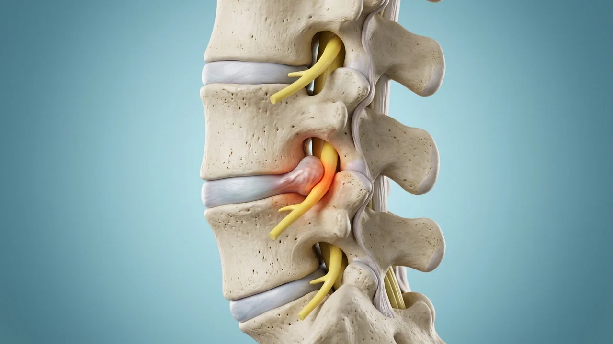
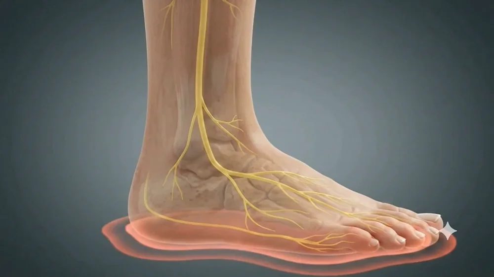
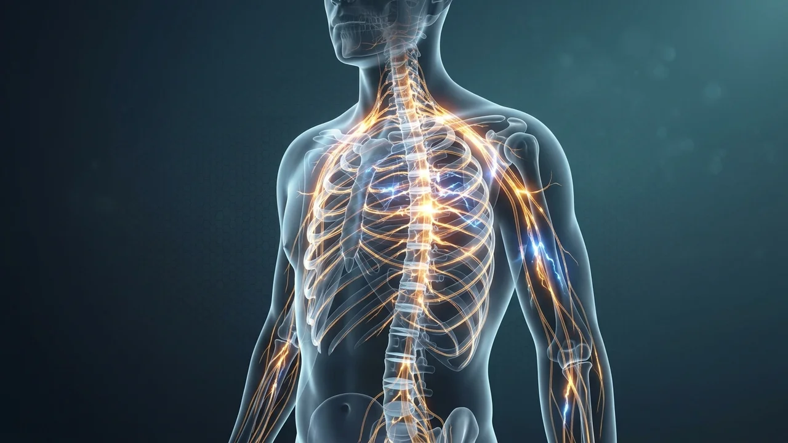
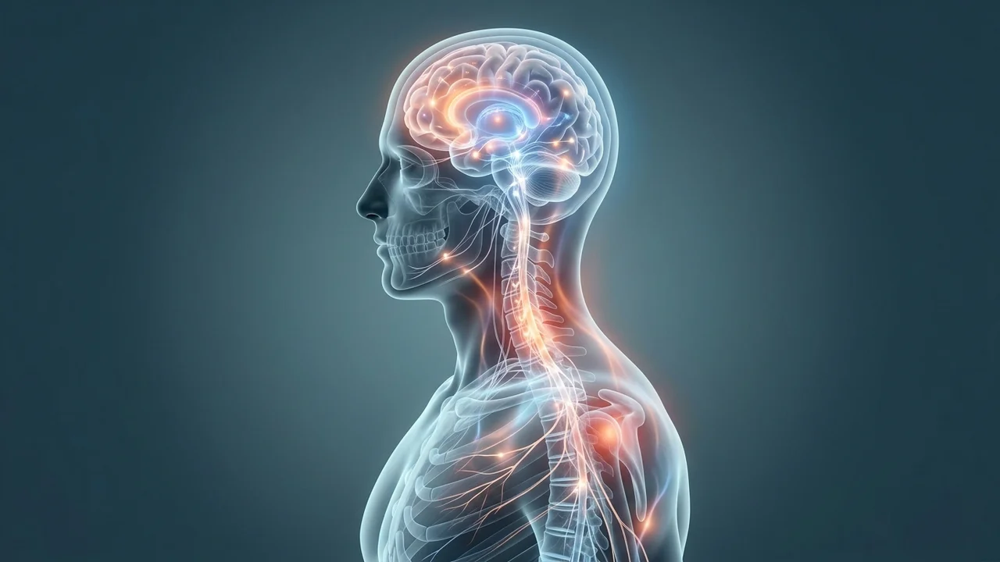
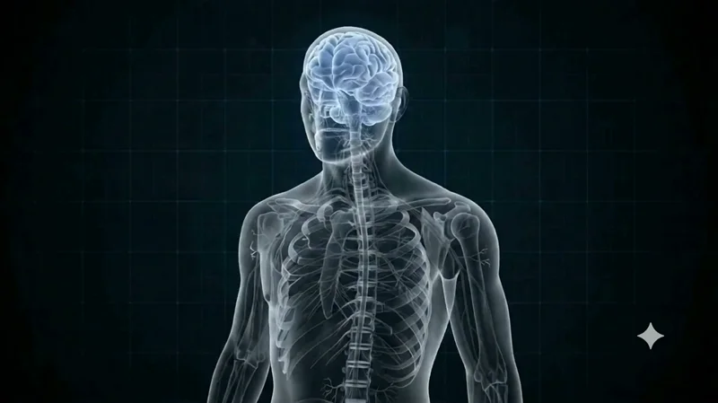

تخصصاتنا
تشخيص وعلاج أمراض الجهاز العصبي المركزي والمحيطي.
تنبيه طبي مهم
يُرجى الانتباه: يتم تحديد التشخيص الدقيق دائمًا بشكل فردي من قبل الطبيب بعد فحص شامل. لا يمكننا ضمان نتيجة علاجية محددة.
العمود الفقري
أمراض العمود الفقري
يحمي العمود الفقري الحبل الشوكي والأعصاب، مع ضمان الاستقرار والحركة في آنٍ واحد. يمكن أن يسبب التآكل وتغيرات القرص والتضيقات وعدم الاستقرار آلامًا واضطرابات عصبية.
نعالج أمراض العمود الفقري العنقي والعمود الفقري الصدري والعمود الفقري القطني. المحور الأساسي هو ما إذا كان التغير التشريحي يتوافق فعلًا مع الشكاوى.
انزلاق غضروفي (عنقي/قطني)
بروز أو خروج مادة القرص الفقري مما يهيج جذور الأعصاب أو الحبل الشوكي. يمكن أن يصيب العمود الفقري العنقي أو القطني.

تضيق القناة الشوكية
تضيق في القناة الفقرية يضغط على الحبل الشوكي أو الأعصاب. يسبب عادةً ألماً أثناء المشي يتحسن عند الجلوس.

مفاصل الوجيهات
التهاب مفاصل وكيسات في المفاصل الفقرية الصغيرة. يسبب ألماً موضعياً في الظهر أو الرقبة قد يتفاقم مع الحركة.

العمود الفقري العنقي & أطراف القرص الاصطناعية
التغيرات في العمود الفقري العنقي قد تؤثر على جذور الأعصاب والحبل الشوكي. حسب الحالة: ضغط، اندماج أو استبدال القرص مع الحفاظ على الحركة.

متلازمة المفصل العجزي الحرقفي
تهيج أو خلل وظيفي في المفصل العجزي الحرقفي. يسبب عادةً ألماً في أسفل الظهر والحوض قد يمتد إلى الأرداف أو الفخذ.
.webp)
كسور الفقرات & التغيرات المرتبطة بالأورام
كسر في جسم الفقرة بعد سقوط، بسبب هشاشة العظام أو ورم. رأب الحداب أو العلاج متعدد التخصصات حسب السبب والاستقرار.

الأعصاب المحيطية
أمراض الأعصاب خارج الدماغ والحبل الشوكي
يمكن أن تتعرض الأعصاب المحيطية للضغط في مناطق تشريحية ضيقة. تشمل الأعراض النموذجية الوخز والتنميل والألم وعند تفاقم الإصابة أو استمرارها - ضعف في القوة.
متلازمة النفق الرسغي
ضغط العصب المتوسط عند الرسغ. يسبب وخزاً وتنميلاً وضعفاً في الإبهام والسبابة والأصابع الوسطى – يشتد ليلاً.

متلازمة النفق المرفقي
ضغط العصب الزندي عند المرفق. وخز وتنميل في الخنصر والبنصر، ألم في المرفق – مع الوقت فقدان القوة في اليد.

متلازمات انضغاط الأعصاب
متلازمات النفق الأخرى في المناطق التشريحية الضيقة بالجسم. ضغط الأعصاب مع وخز وتنميل وألم – وعند التلف المطول ضعف عضلي.

متلازمة النفق الرسغي القدمي
انضغاط العصب الظنبوبي في النفق الرصغي عند الكاحل الداخلي. الأعراض الشائعة: وخز، تنميل، وألم في باطن القدم والأصابع.

تلف الأعصاب/إصاباتها
Traumatische oder operative Schäden peripherer Nerven. Je nach Ausmaß: konservative Behandlung, Nervennaht oder Nerventransplantation zur Wiederherstellung der Funktion.
الاعتلال العصبي المتعدد
Erkrankungen vieler peripherer Nerven gleichzeitig, häufig bei Diabetes oder anderen Grunderkrankungen. Symptome: Kribbeln, Taubheit, Schwäche – oft beginnend an den Füßen.
متلازمات الألم
حالات الألم المزمنة والحادة
يمكن أن يكون للألم المزمن أسباب مختلفة. لذلك كثيرًا ما يكون مفهوم العلاج التدريجي متعدد الأساليب هو الأنسب.
آلام الظهر/الرقبة المزمنة
ألم مستمر يدوم لعدة أشهر. يتطلب مفهوماً علاجياً فردياً ومتعدد الأساليب.

التعديل العصبي
أساليب مبتكرة للعلاج الطفيف الغازية للألم عبر تحفيز كهربائي موجه للمسارات العصبية لتخفيف الألم المزمن بشكل دائم.

الآلام العصبية ومتلازمات الألم بعد الجراحة
ألم ناجم عن تلف الأعصاب أو يظهر بعد الجراحة. أعراض نموذجية: حرقة، وخز، خدر أو فرط حساسية الجلد.

العوامل النفسجسدية المصاحبة
كثيراً ما تترافق الآلام المزمنة مع أمراض نفسية مصاحبة. النهج الشامل الذي يراعي الجوانب النفسجسدية يُحسِّن نتائج العلاج.

علاج الألم الجراحي العصبي المتخصص
علاج فردي ومتعدد الوسائط لمتلازمات الألم المعقدة والمزمنة في الجهاز العصبي والعمود الفقري والجهاز الحركي.
